¿Qué es la canalización?
La canalización se refiere a un proceso de estructura, donde se diseña y establece rutas para cables y conectores. Estos transmiten datos y servicios (internet, telefonía, video, etc.) dentro de los espacios físicos o rutas donde se organizan, protegen y optimizan para lograr el mejor rendimiento.
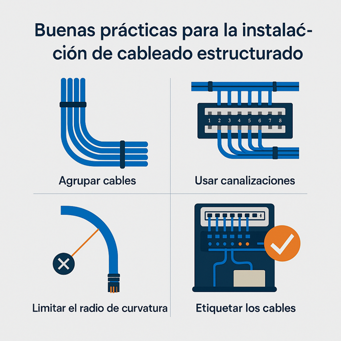
Importancia de una canalización adecuada
La correcta realización de este proceso trae múltiples beneficios a las empresas. Por ejemplo, la productividad se ve afectada directamente por la velocidad de transmisión de información; al tener una canalización adecuada, no solo se vuelve eficiente la transmisión de datos, sino que las interrupciones de los servicios se ven reducidas a casos excepcionales por agentes externos a la empresa. Además, este proceso prolonga la vida de los componentes de cableado, lo cual se traduce directamente en un ahorro a largo plazo al no necesitar mantenimiento constante.
Los factores ambientales que afectan a los cables incluyen:
- Temperatura y humedad: Afectan directamente el rendimiento si no se controlan.
- Radiación UV y sustancias químicas: Pueden degradar los materiales exteriores.
- Estrés mecánico: Tirones o dobleces bruscos que dañan los hilos internos.
Estos elementos aceleran el envejecimiento, degradan el aislamiento y provocan fugas eléctricas. Sin embargo, esto se puede evitar con una correcta canalización desde la planificación. El primer paso es dimensionar en dónde ubicar las rutas de cableado, normalmente en lugares que no sufran los factores ambientales mencionados previamente y que no reciban impactos por el movimiento de maquinaria o personas en el área circundante.
El cableado desordenado dificulta no solo el mantenimiento, sino que la superposición de cables o incluso el cruce entre estos disminuye la calidad de la señal y reduce la velocidad de transmisión de datos. Esto se evita con una canalización organizada, donde se asegura que cada cable tenga su espacio y etiqueta, lo cual facilita el mantenimiento, garantizando que los datos fluyan de forma óptima, reduciendo los tiempos de espera y mejorando la experiencia del usuario.
1. Ductos de PVC
Estos ductos tienen resistencia a la corrosión y al desgaste. Son fabricados a partir de policloruro de vinilo, por lo cual son ideales para instalaciones internas donde la humedad es moderada. No obstante, no son los más robustos, es decir, se desgastan fácilmente con impactos físicos directos o temperaturas extremas; aun así, por su ligereza y fácil manejo, es la opción preferida para muchos instaladores. Cuenta con una amplia gama de ductos entre flexibles y rígidos:
- ENT (Tubos eléctricos no metálicos): Tubos corrugados ideales para empotrar.
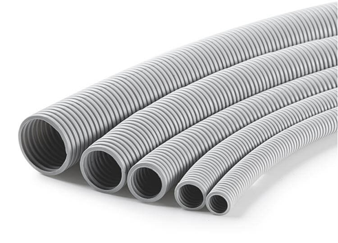
- LFNC (Conducto flexible no metálico estanco a líquidos): Protección contra líquidos y humedad.
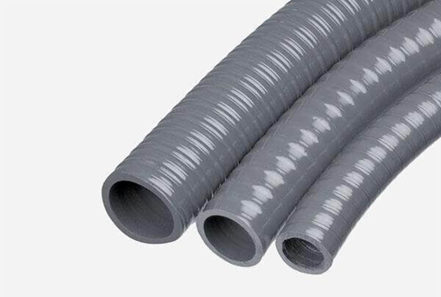
- Conducto de PVC (cloruro de polivinilo): Tubo rígido estándar de alta durabilidad.
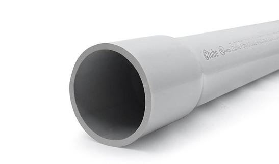
- Conducto de HDPE (polietileno de alta densidad): Altamente flexible y resistente, se vende en rollos.
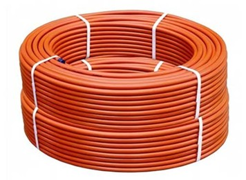
- Conducto LSZH (Bajo Humo y Sin Halógenos): Obligatorio en lugares públicos para evitar gases tóxicos en incendios.
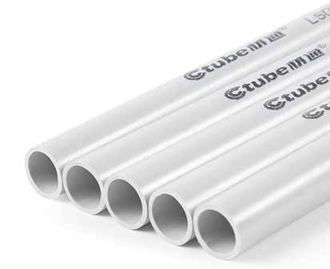
- Canaleta de cables de PVC: Solución limpia para montaje sobre la superficie de las paredes.
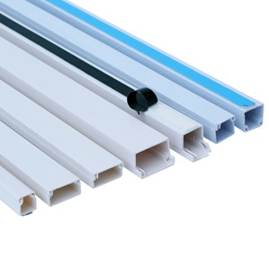
2. Ductos metálicos
Hechos generalmente de acero o aluminio, los ductos metálicos son la mejor opción si se busca una resistencia elevada frente a factores externos como impactos o incendios. Si bien su instalación es más costosa, reducen las interferencias electromagnéticas al actuar como una jaula de Faraday. Cuenta con una amplia gama:
- EMT (Tubería Metálica Eléctrica): Tubos metálicos de pared delgada, muy utilizados en comercio.
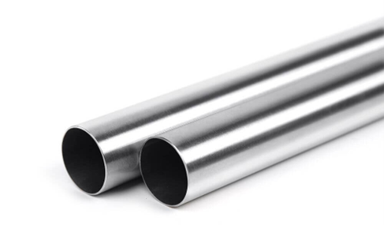
- RMC (Conducto Metálico Rígido): Tubos pesados de pared gruesa con rosca para entornos industriales exigentes.
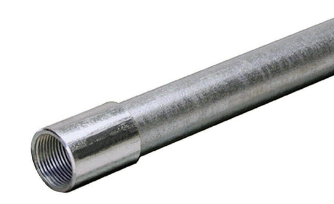
- IMC (Intermedio): Tubería de espesor medio, balance entre protección y peso.
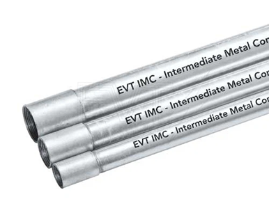
- FMC (Flexible): Tuberías helicoidales para zonas con vibración o curvas complejas.
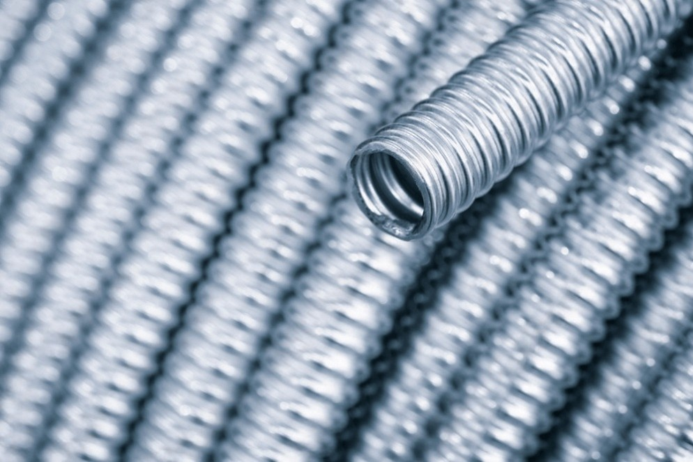
- LFMC (Flexible estanco a líquidos): Cubierta plástica sobre núcleo metálico flexible.
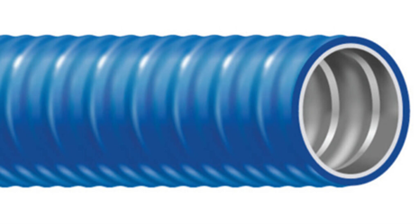
- Canaleta de cables metálica: Estructuras ranuradas robustas para soportar alta carga de cables.

3. Fibra de vidrio
Los conductos de resina termoestable reforzada (FRP/Fiberglass) ofrecen un equilibrio único de propiedades técnicas para infraestructuras especiales. Cuenta con una opción destacada:
- RTRC (Fibra de Vidrio): Esta opción es explícitamente para instalaciones que necesiten aislamiento térmico, ligereza excepcional y resistencia máxima ante la corrosión en ambientes químicos severos.
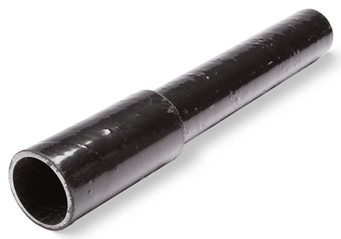
Tipos de Instalación
- Ductos de superficie: Se encuentran visibles al estar por paredes, techos o suelos, siendo una solución práctica para las instalaciones empotradas que no son deseadas o viables. Es fácil el acceso al cableado para futuras modificaciones.
- Ductos empotrados: Se encuentran ocultos dentro de paredes, techos o suelos. Se debe planificar su instalación desde el inicio del diseño arquitectónico. Brinda una solución estética y segura, cuidando siempre la ventilación para evitar sobrecalentamientos.
Conectores de cableado estructurado
- RJ-45: Diseño rectangular con 8 pines, usado en conexiones Ethernet para redes locales (LAN). Soporta velocidades desde 10 Mbps hasta 10 Gbps o más según el cable.
- RJ-11: Conector tradicional para telefonía. Cuenta con 4 o 6 pines y es más estrecho. Su uso ha disminuido debido a la tecnología VoIP, pero sigue vigente en líneas analógicas.
- Conectores de fibra óptica (SC, ST, LC): Transmiten usando impulsos de luz, permitiendo velocidades y distancias superiores. Exigen que las conexiones estén completamente limpias para evitar atenuación.
Pasos para una correcta canalización
Para asegurar el éxito del proyecto, se deben seguir de forma estricta las siguientes fases organizadas:
- 1. Planificación: Realizar un diseño donde se visualicen todos los dispositivos, cables, rutas, conexiones y el área de concentración de conexión, anticipando la escalabilidad futura.
- 2. Elección de materiales: Priorizar la resistencia y rendimiento óptimo según el entorno (ductos de PVC, metálicos, distancias y normativas de la empresa).
- 3. Instalación: Seguir las instrucciones del diseño de planificación, cuidando el tendido y evitando puntos de falla mecánica.
- 4. Pruebas: Realizar testeos analíticos de cada componente revisando calidad de señal, velocidad de transmisión e integridad de datos antes de operar.